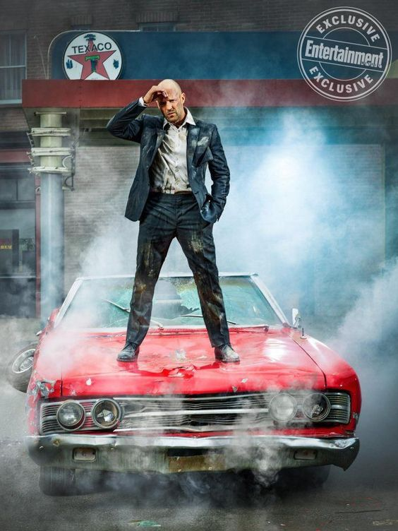

Film heroes:
| The actor Vin Diesel (Dominic Toretto): | |
|---|---|
An American actor and producer, his artistic debut was at the age of seven through
his participation in plays for children, at the New City Theater in New York.
then his cinematic debut was in 1990 through his participation in the movie
(Awakenings), after which his works continued in the nineties, most notably
the movie (Saving Private Ryan). in 1998, also among his most prominent
works (Fast & Furious 6, Babylon A.D).
|
| The actress Michelle Rodriguez (Letty Ortiz): | |
|---|---|
American actress, born in Texas, July 12, 1978 to a Dominican mother; And a father from
Puerto Rico. Rodriguez moved with her mother to the Dominican Republic at the age of 8.
She stayed there until the 11th. To move to Puerto Rico and stay there until the age of
17 before moving to New Jersey, USA.
|
|  | The actor Jason Statham (Ian Shaw): |
|---|---|
Jason Stratham is an English actor, producer, model, martial artist and former diver. Stratham
was born in Shirebrook, England, on September 12, 1967. He's best known for his high-adrenaline
roles in Guy Ritchie crime flicks like "Lock, Stock and Two Smoking Barrels" (1998), "Snatch"
(2000) and "Revolver" (2005). His other film credits include "The Transporter" (2002), "The Italian
Job" (2003), "The Expendables" (2010) and "The Expendables 2" (2012). The actor usually does his own
stunts and stage combat scenes. Stratham was a member of Britain's National Diving Squad for twelve
years before being scouted by a sports modeling agency. This stroke of luck landed him a deal with
French Connection, through which he met director Guy Ritchie. After a seven-year relationship with
model Kelly Brook, Stratham became involved with Victoria's Secret model Rosie Huntington-Whiteley.
|
 |
The actor John Cena (Jakob): |
|---|---|
An American actor, produce, and wrestler of Italian, French, Canadian and English descent. He was
born on April 23, 1977 in West Newbury, Massachusetts. He shone in the field of freestyle wrestling
and won many titles to become in a short period of time among the most popular wrestlers in W.W.E.
He made his acting debut in 2000 in Ready to Rumble. He co-starred for the first time in The Marine.
He is best known for acting in 12 Rounds, Trainwreck, Bumblebee, and The Suicide Squad.
|
| The actor Paul Walker (Brian): | |
|---|---|
Paul Walker is an American actor born on September 12, 1973 in Glendale, California to a Mormon family.
He made his screen debut in a Pampers advertisement as at age 2. After high school, Walker attended
several community colleges and graduated with a degree in marine biology, which seems appropriate for
an avid surfer. Walker first gained recognition for his role in the hit film "Varsity Blues" (1999).
He's also well known for his starring role as Brian O'Conner in "The Fast and the Furious" franchise
which has spawned six movies, with another one coming in 2015.He also appears in the National Geographic
Channel series "Expedition Great White." In March 2010, Walker traveled to Chili to do charity work following
an 8.8 magnitude earthquake.Similarly, he went to Haiti with his REACH OUT team to provide support after the
devastating 2010 earthquake.
|